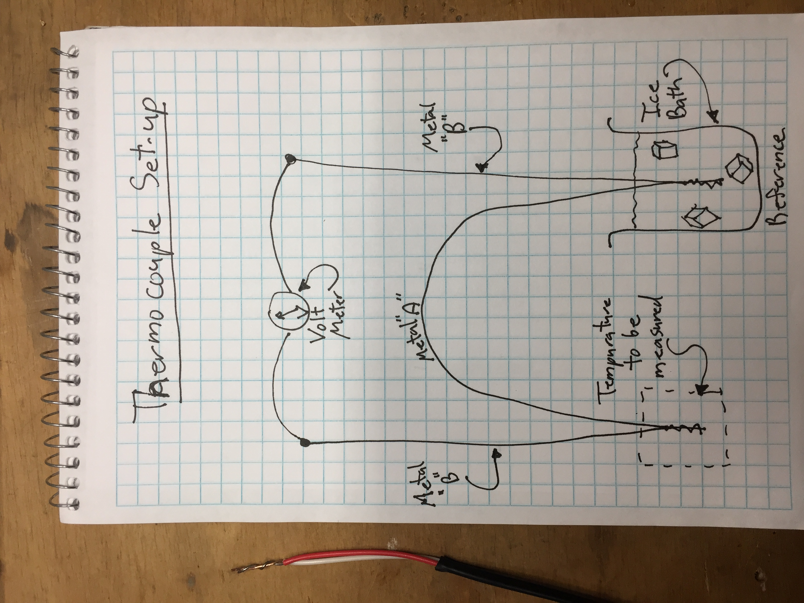
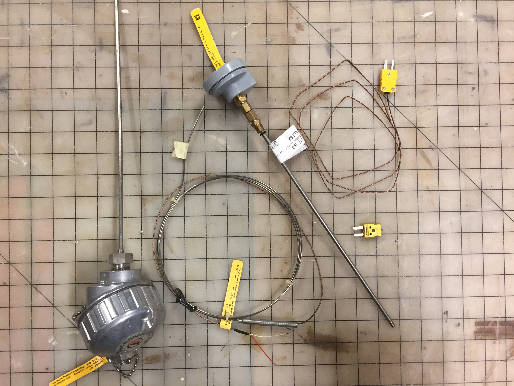
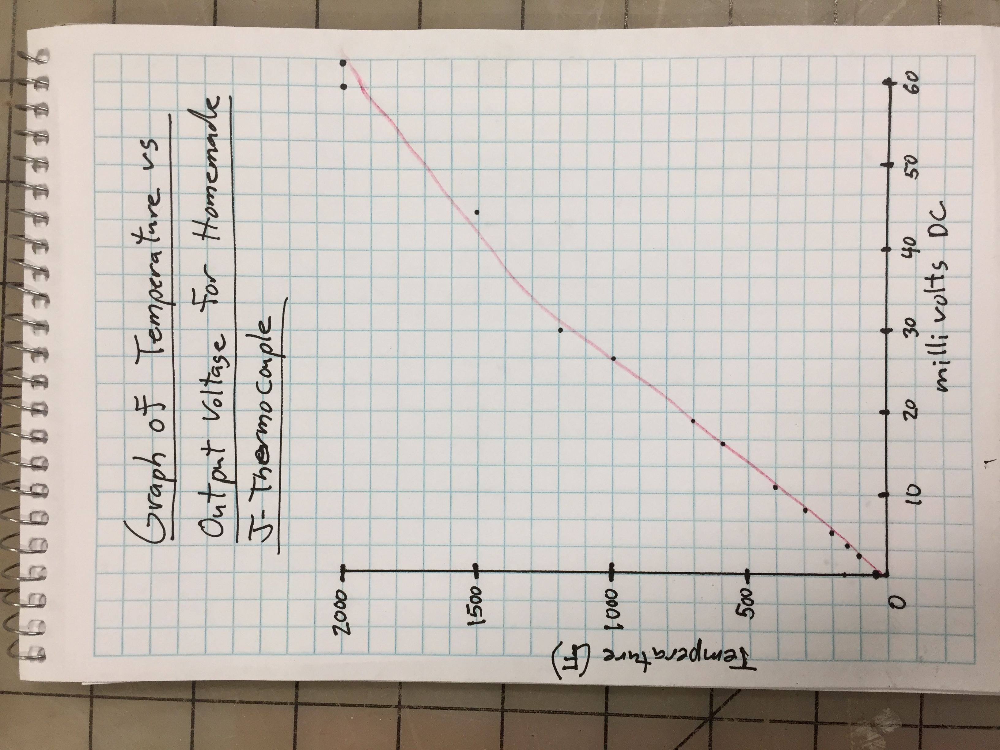

I got this, Pikachu!
Return to my home page.
Some industrial thermocouples I use at work:
Graph of temperature vs. millivolt output of my home-made J-type thermocouple:
(with an ice bath as a reference so zero millivolts = 32 degrees F)

I made a J-type thermocouple using thermocouple wire and an ice bath as a temperature reference to enable my multimeter to read the millvolt output of the thermocouple. Thermocouples are made by joining different types of metals together. A J-type thermocouple uses iron as one metal and constantan (55% copper and 45% nickel) as the second metal. I used a torch to heat the thermocouple up to 2000 degrees F and recorded the temperature vs. millivolt readings to create the above graph, which is fairly linear. I connected the thermocouple circuit to the Arduino and downloaded the AnalogReadVoltage code. I also (at Prof. Hart's suggestion) changed from 10-bit to 12-bit resolution.
Video of the thermocouple being heated with a torch from room temperature: